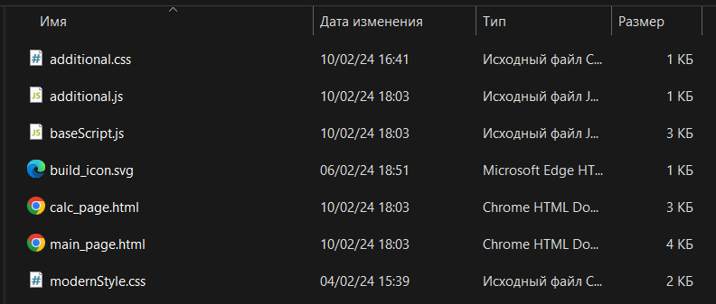

Используйте сочетание клавиш [CTRL] + [F], чтобы воспользовать поиском по странице!
Это может помочь Вам найти ответ на Ваш вопрос значительно быстрее.
По открытии WebPresentationsConstructor вы увидите такое окно.
Давайте рассмотрим его более подробно.
Теперь давайте создадим наш первый проект в WebPresentationsConstructor. Для этого нам нужно нажать на кнопку "Создать"(на рисунке обозначена цифрой 1), а затем, в появившемся окне, вписать имя нашего нового проекта! Так как мы сейчас учимся, то предлагаю ввести либо "тест", либо "test".
Как таковых ограничений на название проекта нет, за исключением символов, запрещённых системой при наименовании файлов и папок.
Для Windows это: '\', '/', '|', ':', '?', '"', '*', '<', '>'
После нажатия кнопки "ОК", мы снова попадаем в меню обзора проектов, где можем видеть наш только что созданный проект.
Если этого не произошло, то вам нужно нажать на кнопку "Обновить список"(на рисунке выше обазначена цифрой 4).
Далее, нажмаем на проект, который хотим редактировать, в нашем случае он один, задний фон после нажатия должен изменить цвет, теперь нажимаем на кнопку "Редактировать"(на рисунке выше отмечена цифрой 2) и ожидаем загрузки редактора. Поздравляю, на этом работа в данном окне завершена!
Добро пожаловать в редактор!
Изначально может показаться, что здесь всё слишком сложно и перегружено, но это не так, разобраться с этим довольно легко, однако, как и для любого другого дела, здесь потребуется время, но поверьте, это не настолько сложно. Я постарался сделать максимально простой и логичный интерефейс. Давайте же скорее разберём его подробнее, чтобы вскоре вы сами смогли создавать свои проекты.
На рисунке всего 5 выделенных областей, назначение которых придётся запомнить, чтобы работа с WebPresentationsConstructor была достаточно комфортной. Давайте разберём каждую.
Синим цветом выделена область инструментов. Там вы можете подредактировать параметры, найти нужный цвет, посмотреть файлы проекта, сохраниться и, выбрав вкладку "Создание", создать нужный вам элемент. Более подробно мы разберём это в последующих главах.
Оранжевым обведена ваша сцена - некоторая область, где показывается результат вашей работы.
А вот красным обозначены ваши элементы, расположенные на сцене, их порядок и зависимости. Как можете заметить, здесь уже есть некоторый элемент body, о котором мы также поговорим позже
Ниже расположилась зелёная область. Там находятся 4 кнопки, позволяющие изменять порядок и иерархию объектов на сцене, расставлять их в любой угодной вам последовательности.
И осталась последняя область - инспектор. Как вы знаете, элементы могут иметь разный цвет, форму, расположение относительно других объектов и т.д., так вот, все эти свойства настраиваются отсюда! Вы можете менять различные свойства различных элементов, но сейчас там ничего нет, опять же, в этой главе мы разбираем окно редактора, об элементах, их свойствах, создании, удалении и прочая теория будет рассмотренна в других главах.
С частями редактора разобрались, пора переходить к доп. окнам, но где же они находятся? Под кнопками в синей области на вкладке "Главная"!
Итак, сейчас мы рассмотрим кнопки: "Файлы", "Config", "Браузер", "Палитра". Прочие не вызывают никаких дополнительных окон, но от этого не становятся менее полезными. Поехали!
Это четвёртая по счёту кнопка.
По нажатии у вас откроется следующее окно.
В данном окне находятся все файлы, используемые в проекте: файлы страниц, фото, видео, музыка, стили, скрипты и прочие. В нашем случае здесь ничего нет! Давайте же создадим новый JavaScript-файл! Чтобы это сделать, проделайте следующий алгоритм.
После этих действий ваше окно обзора файлов должно выглядеть таким образом:
Представим, что файл нам больше не нужен, и мы хотим удалить его. Для этого выделите его, нажав по нему левой кнопкой мыши, и нажмите на кнопку "Удалить" - всё!
Далее, кнопка "Импорт" делает почти тоже самое, только не создаёт, а копирует уже существующий, выбранный вами файл, в папку проекта, можете протестировать её самостоятельно. Кнопка "VS CODE" будет работать только в случае, если у вас установлена одноимённая программа. В противном случае вы получите ошибку.
Осталась последняя кнопка - "Показать". Тут всё просто, по нажатии данной кнопки, у вас откроется окно проводника(файлового менеджера), где будут отображены все файлы проекта.
Говоря коротко, это окно, где собраны все основные настройки вашего проекта.
Если вы не знаете предназначения определённых функций, то лучше не стоит их трогать, ведь все необходимые настройки выставляются автоматически. Но вы можете поменять поле "Заголовок". Оно отвечает за текст, который будет написан вверху вашей страницы, автоматическое значение - название вашего проекта. Также рекомендую выбрать в комбо-боксе напротив слова "Стили" "modernStyle.css" и нажать кнопку с плюсом.
Говоря о кнопках, находящихся в данном окне, можно сказать, что кнопки напротив "Скрипты", "Стили", "Доп. файлы" выполняют одинаковую функцию для разных списков:
"+" - добавить выбранный в комбо-боксе элемент
"-" - удалить выбранный в списке элеменнт
Кнопки со стрелочками вверх и вниз отвечают за перемещение выбранного элемента в списке вверх и вниз соответственно.
Но что такое эти "Скрипты", "Стили" и "Доп. файлы"? Это расширения для вашей будущей презентации. Скрипты - функционал, Стили - графика, а Доп. файлы могут пригодиться вам при создании более сложного проекта.
По завершении работы в этом окне нажмите на кнопку, расопложенную внизу, - "Сохранить и применить".
Вот так выглядит финальный вариант у меня:
В ходе разработки вам пригодится возможность выбирать цвет для фона, текста, обводки и т.д. - с этой целью в WebPresentationsConstructor была добавлена палитра!
Здесь вы можете подпбрать необходимый вам цвет изменяя коэффициент R, G, B на необходимый вам, а после, он автоматически конвертируется в HEX код полученного цвета. Важное условие для коэффициента R, G, B ⋿ [0; 255]
Изначально, здесь будут выставлены случайные значения для R, G, B.
По нажатии этой кнопки вы сможете посмотреть, как будет выглядеть результат прямо в вашем браузере: Mozilla Firefox, Google Chrome, Microsoft Edge и т.д.
В этой главе мы рассмотрим принцип создания элементов, их свойства, предназначение и как с ними работать.
Чтобы открыть панель создания элементов, откройте вкладку "Создание". Здесь вы можете видеть весь список элементов, доступных для создания в WebPresentationsConstructor 0.0.0.1.
Давайте разберём каждый:
Это простой текст, который вы прямо сейчас читаете. В нём нет ничего удивительного. Вот перечень его свойств:
Это гиперссылка, под которую вы можете спрятать ссылку, перенаправляющую на другую страницу. Вот перечень её свойств:
А вот так она выглядит на практике
ПримерАктивный элемент на который можно нажать и назначить какое-то действие по нажатии, вот её свойства:
А вот так она выглядит на практике
Элемент, используемый для создания горизонтальных отступов, пустых строк и их завершения.
Это обычная фотография, которую можно установить как по импортированным файлам, так и по ссылкам из интернета. Имеет следующие свойства:
Это медиа элемент, который может воспроизводить видео и аудио файлы, импортированные в проект Имеет следующие свойства:
Вы можете использовать данный элемент для расстановки элементов в ряд, столбик, закреплять их поверх всех или менять как-либо ещё.
Это несколько элементов, идущих в столбик. Может быть нумерованным или нет.
Пример нумерованного списка
Пример НЕнумерованного списка
При помощи данного элемента вы можете запросить у пользователя ввод каких-то данных. Вот его свойства:
А вот примеры нескольких вариантов поля ввода
Это элемент, где вы можете написать свой собственный HTML код
Если вы хотите нарисовать окружность, квадрат, ромб и прочие фигуры на вашей старнице, то это ваш выбор. Вот его свойств:
Пример:
Этот элемент позволяет вам приводить в движение ваши элементы, являющиеся дочерними у него. Есть разные загатовленные сценарии и вот его параметры:
Как видете, в WebPresentationsConstructor достаточное количество элементов для создания веб сайта. Но как же можно их создать? Всё просто! Вам нужно просто нажать на интересующий вас элемент и он отобразиться в дереве элементов. Попробуйте добавить текст на страницу! Должно получиться что-то такое.
Однако текст в квадратных скобках у вас может отличаться. Почему? Потому что это уникальное имя элемента, используя его можно получить информацию о внешнем виде, содержании и т.п. Это может пригодиться вам при создании сложных проектов.
Теперь нажмите на элемент "Текст" в дереве и обратите внимание на инспектор. Там должны быть свойства элемента, но их нет? Чтобы они отобразились, вам нужно убрать галочку напротив "Использовать стиль из файла", нажать применить, а после снова выделить этот элемент в дереве. Как итог должно получиться что-то такое:
Вы можете изменить содержание данного элемента, изменив текст в поле "Содержание". К примеру, напишите там фразу "Мой первый текст". Можете изменить цвет, шрифт, размер и т.д. Помните, что в цвет нужно указывать HEX код цвета - для этого можете использовать палитру. Когда вы выставите все необходимые настройке - нажмите на кнопку "Применить".
Что делать, если у вас не отображается ваш добавленный текст в окне предпросмотра(сцене) и в браузере? Для этого нажмите на кнопку "Обновить" на вкладке "Главная"
Как итог, у меня получилось вот так.
Теперь, в качестве практики попробуйте добавить и изменить свойства у ещё нескольких элементов по примеру выше.
Эта подглава названа не просто так одноимённо с известным романом Тургенева. Да, здесь не будет Базарова и Кирсанова, мы поговорим о дочерних элементах и их родителях.
Нужно запомнить, что у вас есть три родителя: группа, список, прокрутка. В группу можно добавить любые элементы, а вот в остальные лишь часть. В прочем, чтобы добавить дочерний элемент к родителю, вам нужно выбрать его(родителя) в дереве, а после просто создать элемент, как это было раньше. Также вы можете выбрать дочерний элемент какого-либо родителя, чтобы добавить ребёнка к нему же. Таким образом, можно выстраивать сложные сцены. Если элемент не может быть добавлен к родителю, то вы увидете всплывающее окно.
На фото ниже можно увидеть пример Выравнивания элементов по центру при помощи группы и её свойства.
Теперь попробуйте сделать похожую страницу и изменять различные свойства, чтобы посмотреть их влияние на финальный вид. Попробуйте воспользоваться элементом прокрутки, а также настроить его.
Возможно у вас остался вопрос: "А что делает кнопка Домой?". Я могу дать вам отввет прямо сейчас. Создайте на страницу гиперссылку и перейдите по ней. А теперь нажмите на кнопку "Домой". Пожалуйста! Вы вернулись назад. Именно для этого она нужна.
В самом начале, когда мы знакомились с редактором, я обратил ваше внимание на кнопки под деревом, но подробно о них говорить не стал. Сейчас настало время. Их всего 4, сложности возникнуть не должны...
Первая и вторая кнопки перемещают ВЫБРАННЫЙ элемент вверх и вниз соответственно. Чтобы проверить это, выберите любой элемент, кроме body, в дереве и нажмите на эту кнопку, после обновите страницу. Как видете, элемент переместился. Но что делают оставшиеся две кнопки?
Третья кнопка делает выбранный элемент дочерним для элемента ниже, если это возможно, то есть элемент, расположенные иерархически ниже должен иметь возможность принимать детей, это может быть группа или любой другой элемент-родитель.
Четвёртая кнопка делает почти тоже самое, но наоборот. Говоря конкретнее, она делает выбранный элемент дочерним для родителя родителя данного элемента. Понимаю, звучит сложно. Чтобы понять давайте рассмотрим пример на картинке ниже:
Надеюсь, что так стало значительно понятнее.
Но каждый раз тянуться мышкой вниз не очень удобно. Поэтому в WebPresentationsConstructor предусмотренно контекстное меню, чтобы его активировать необходимо выбрать элемент в дереве и нажать правой кнопкой мыши по нему. У вас откроется контекстное меню, где будет 5 кнопок.
Как видете, первые 4 кнопки - те же самые, что и внизу, а вот пятая нужна для удаления. Идентичная ей по функционалу располагается снизу инспектора. Она просто удаляет элемент из дерева и памяти компьютора.
Теперь попрактикуйтесь в работе с элементами.
Чтобы сохранить ваш файл вам нужно нажать на первую кнопку на вкладке "Главная" - Сохранить. Далее указать имя страницы и всё. Для загрузки страницы откройте обзор файлов и дважды нажмите на файл вашей старницы. Они отмечены надписью "СТР." сверху слева.
У кнопок вам может понадобиться функционал. Для этого нужно выбрать необходимую функцию в списке, но вот незадача - там ничего нет! Для того чтобы там появились функции вам нужно добавить скрипты через config. Как это сделать мы разбирали во второй главе. После этого они там появятся. Вот список функций и аргументов для baseScript.js
| Название функции | Аргументы | Описание |
|---|
Также у вас может возникунть вопрос по поводу отступов. Вед в инспекторе написано "T R B L" в скобках. Тут тоже всё просто. T - отступ сверху, R - справа, B - снизу, L - слева. Ведь отступы вы прописываете в виде "0 0 0 0" или другие числа. Так вот, все они расположены соответственно. То есть первое число - отступ сверху, второе - справа, третье - снизу, а четвёртое - слева.
В этой главе мы рассмотрим финальный этап работы над проектом - сборку его в окончательный набор файлов HTML.
Для этого я подготовил специальный проект, который вы можете скачать и повторять действия за мной или использовать свой.
Чтобы начать редактировать его вам нужно выполнить следующий алгоритм:
Теперь вы можете добавить что-то своё, либо приступить к сборке. Для этого нажмите на кнопку "Сборка" на вкладке "Главная" и откажитесь от сохранения, если вы не вносили никаких изменений, в противном случае - соглашайтесь. У вас откроется такое окно:
Для начала, вы можете посмотреть все файлы, которые будут задействованы в сборке, для это в дереве нажимайте на треугольнички - разворачивайте и смотрите, что будет использовано.
Затем вам нужно указать пустую папку на вашем ПЗУ, куда будет сохранён результат сборки. Чтобы это сделать вам нужно нажать на кнопку с тремя точками и указать папку. Если вы поставите галочку напротив "Заархивировать в Zip архив", то данная папка будет удалена, но на её месте появится одноимённый Zip архив. Как итог у меня получилось следующее:
Теперь нажимаем на кнопку "Старт". У вас должно открыться окно консоли, не пугайтесь, всё идёт по плану. Ожидайт, пока в консоли не появится зелёный текст, а затем нажимайте любую клавишу на вашей клавиатуре, выделив окно консоли, после у вас должно появиться уведомление об успешном завершении сборки. При включённой сортировке результат получился следующим:
При выключенной таким:
На этом документация по WebPresentationsConstructor завершена! Теперь вы самостоятельно можете создавать свои проекты и развивать их. Если вы что-то забыли, то в любой момент можете вернуться к документации и перечитать её. На этом всё!